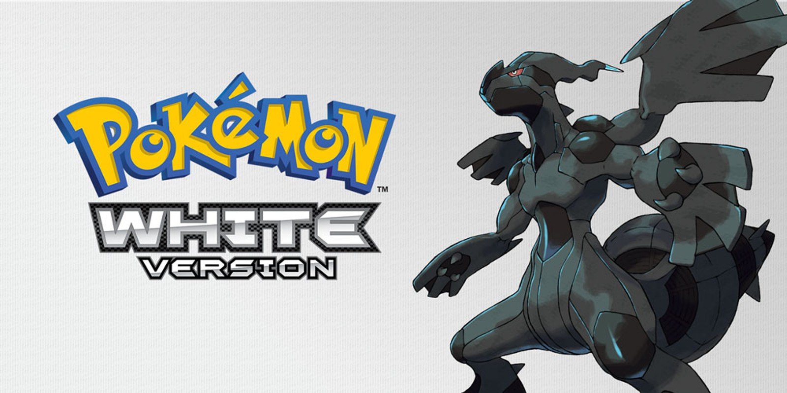
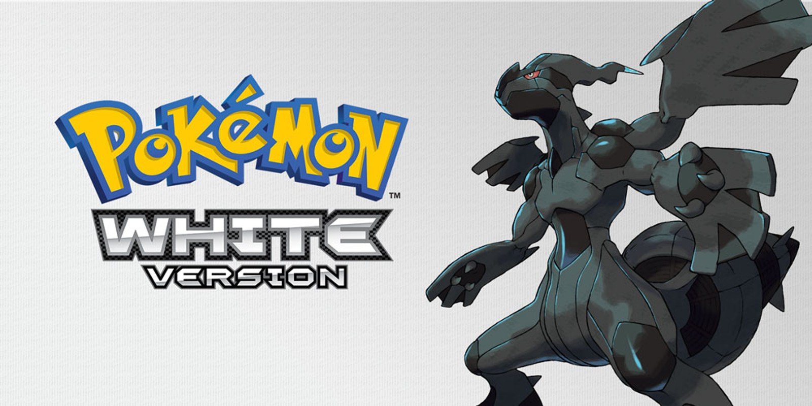

The Most Popular and Highest-Grossing Nintendo DS Games: A Legacy of Success
11/10/2024Introduction
The Nintendo DS, released in 2004, quickly became one of the most successful handheld gaming consoles of all time. With its dual-screen design, touch functionality, and a vast library of games, it appealed to a wide range of gamers. Among its thousands of titles, certain games stood out not just for their innovative gameplay but also for their commercial success. Below is a look at the top 10 highest-grossing and most popular DS games that defined this beloved platform.
10. Dragon Quest IX: Sentinels of the Starry Skies
Sales: 5.30 million copies Dragon Quest IX pushed the boundaries of handheld role-playing games, offering a sprawling adventure filled with customizable characters and cooperative multiplayer gameplay. Players could team up with friends to explore dungeons, complete quests, and battle formidable enemies. The game’s expansive world, charming art style, and blend of traditional and modern RPG elements earned it critical acclaim and commercial success, particularly in Japan.
9. The Legend of Zelda: Phantom Hourglass
Sales: 4.76 million copies As a sequel to the critically acclaimed The Wind Waker, Phantom Hourglass brought the legendary Zelda franchise to the DS with innovative touch-based gameplay. Players used the stylus to control Link’s movements, perform sword attacks, and solve intricate puzzles. The game’s unique approach to navigation, allowing players to draw routes for their ship, added a layer of interactivity that set it apart. Its engaging storyline and inventive mechanics made it one of the most beloved Zelda games on the platform.
8. Super Mario 64 DS
Sales: 11.06 million copies A reimagining of the iconic Super Mario 64, this DS title brought the revolutionary 3D platformer to a new generation of players. Enhanced with updated visuals, additional playable characters, and engaging mini-games, it provided both nostalgia for fans of the original and fresh content for newcomers. The game’s inclusion of touch screen controls and new challenges ensured it was more than just a remake—it was a testament to Mario’s timeless appeal and a showcase of the DS’s capabilities.
7. Animal Crossing: Wild World
Sales: 11.75 million copies Building on the charm of its predecessor, Animal Crossing: Wild World brought the life-simulation genre to the DS, allowing players to immerse themselves in a tranquil, customizable village. The DS’s touch screen simplified interactions, such as managing inventory and writing messages, while online functionality enabled players to visit friends’ towns. The game’s relaxing, open-ended gameplay encouraged creativity and long-term engagement, establishing Animal Crossing as a beloved series with enduring appeal.
6. Pokémon Black and White
 

Sales: 15.65 million copies As the fifth generation of Pokémon games, Black and White brought a fresh perspective to the series with a more complex storyline and enhanced gameplay mechanics. These titles introduced 156 new Pokémon, dynamic battle sequences, and a refined focus on strategic gameplay. The games also featured seasonal changes and a greater emphasis on environmental storytelling, providing a richer, more immersive experience. Their critical and commercial success reinforced Pokémon’s status as a powerhouse franchise.
5. Pokémon Diamond and Pearl
Sales: 17.67 million copies Pokémon Diamond and Pearl heralded the arrival of the fourth generation of Pokémon, introducing a wealth of new features that enriched the franchise. The DS’s Wi-Fi capabilities enabled online trading and battling, fostering a global community of Pokémon enthusiasts. With updated visuals, a compelling storyline, and the addition of over 100 new Pokémon, these games struck a perfect balance between tradition and innovation. They captivated a generation of fans, ensuring Pokémon’s dominance in the handheld gaming landscape.
4. Brain Age: Train Your Brain in Minutes a Day!
Sales: 19.01 million copies Targeting an audience beyond traditional gamers, Brain Age became a groundbreaking title that redefined the purpose of video games. Designed as a mental training tool, it featured a series of exercises intended to improve cognitive functions such as memory, calculation, and problem-solving. The game's minimalist presentation and straightforward mechanics appealed to casual and older players, successfully attracting non-gamers into the world of gaming. Its massive popularity spurred a series of sequels and marked a turning point in Nintendo’s strategy of broadening its audience base.
3. Nintendogs
Sales: 23.96 million copies Nintendogs stood out as one of the most innovative titles on the DS, offering players the chance to interact with virtual puppies in a deeply personal and engaging way. By leveraging the DS’s touch screen and microphone, players could pet, train, and communicate with their virtual pets, creating a realistic and heartwarming experience. Its universal appeal, crossing age and gender barriers, contributed to its widespread success. The game's ability to evoke genuine emotional connections made it a cultural phenomenon and a unique jewel in the DS’s catalog.
2. Mario Kart DS
Sales: 23.60 million copies Mario Kart DS took the beloved kart-racing formula to the handheld arena, delivering a thrilling, fast-paced experience that players could enjoy anywhere. It was the first game in the series to feature online multiplayer, enabling gamers to race against opponents worldwide through the Nintendo Wi-Fi Connection. The game introduced memorable tracks like Delfino Square and Waluigi Pinball, as well as a variety of game modes, including Balloon Battle and Mission Mode. Its tight controls, accessible gameplay, and iconic roster of characters cemented it as one of the most celebrated Mario Kart entries.
1. New Super Mario Bros.
Sales: 30.80 million copies As a modern revival of the classic Mario platforming formula, New Super Mario Bros. delivered an experience that seamlessly blended nostalgia with innovation. The game reintroduced players to the vibrant Mushroom Kingdom, offering fresh power-ups such as the Mega Mushroom and Mini Mushroom, alongside creative levels teeming with secrets and challenges. Its crisp visuals, iconic music, and addictive gameplay loop appealed to both seasoned fans of the franchise and newcomers alike. The inclusion of a two-player competitive mode further enhanced its appeal, making it a must-have title that defined the DS’s success.
Conclusion
The Nintendo DS's library represents a golden era of handheld gaming, boasting an array of titles that achieved both commercial triumph and critical praise. From the charming simplicity of Nintendogs to the competitive thrill of Mario Kart DS and the imaginative worlds of Pokémon and Zelda, these games helped shape the DS’s identity as a console that could cater to everyone. Their legacy endures, not just as milestones in gaming history but as reminders of the DS’s ability to innovate, entertain, and connect players around the globe.